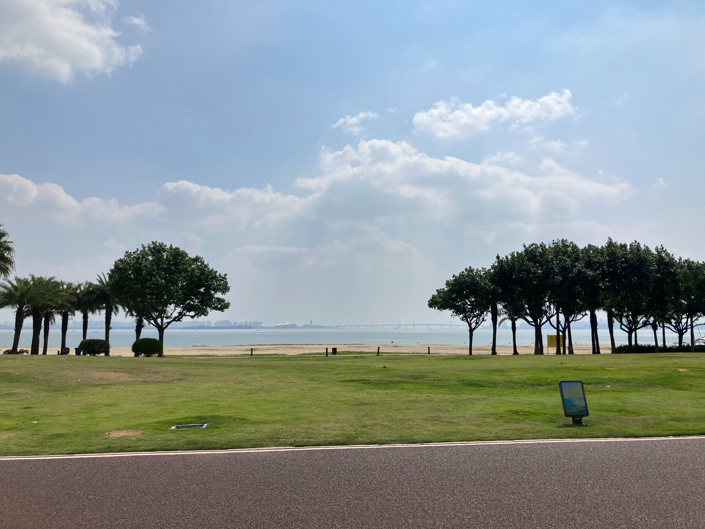

廈門・集美区から、同安区の海岸沿いに来た。
ニャチャン振りに海沿いで過ごしたかったから来たわけだけど、
砂浜と青い海みたいな、所謂リゾート的なビーチではなかった。
どちらかと言うと、海浜公園みたいな場所。
周辺には数軒のホテルと、
平日は利用客が誰もいない、廃墟みたいなショッピングモール。
徒歩圏内にあるのは、ほんとにそれくらい。
人はいないし、見どころは少ないし、海が特別綺麗なわけでもない。
たぶんまともな感覚の人なら、
2泊もしたら、退屈すぎて、居場所を変えたくなると思うけど、
私は妙にここが気に入って、
ちょうど丸1週間滞在した。
気に入った理由の一つは、
とにかく静かなことだったかもしれない。
静寂の中で、
物思いに耽ったり、考え事をしたりした。
葛藤
何度も考えていたのが、
このまま今のやり方で、
旅の様子を発信していけるだろうか、ということだった。
10年以上振りに旅を再開して、
今回初めて、（ほぼ）リアルタイムで旅を発信している。
SNSを始めて間もないから規模は小さいけど、
反応はかなり良い。
そのこと自体は、とても嬉しい。
フォロワーの方には感謝しかない。
ほんとに。
ただ、旅をしながら、
「今回のstoriesはウケが良かったな。」
とか、
「これはreelの素材になりそうだな。」
とか、
以前の自分なら考えなかったことを、
考えだしている自分がいることに気付いた。
静寂の中で、
昇る朝日にスマホのカメラを向けながら、
「うーん、あんまり映えないな。」
みたいな。
なんだろ、これ？
強烈な違和感を感じた。
繰り返しになるけど、
SNSの反応自体は、本当に嬉しい。
ぐっと込み上げるものがあるくらい、嬉しい。
学年集会で、熱く語りたいくらいだ。
でもスマホもネットもない時代から旅をしてきて、
深夜特急を読んだときも、
「いや、てかわれわれもこんな感じだったよね？」
みたいな感覚の自分が、
再生数とかフォロワー数とか気にしだしたら、
旅そのものへの喜びや感動や高揚感を、
失ってしまいそうな気がしてきた。
そんな葛藤を抱えながら、
同安の海岸沿いを、
あてもなく散歩したり、ジョギングしたりしながら、
1週間を過ごした。

文章
私は熱心な読書家ではない。
学生時代は読んでいない本の読書感想文を何本も書いたことは、
ここでは一応伏せておくが、
本はむしろ読まない方だと思う。
ただ職業柄、大量の活字には触れてきた。
難解な論文を読んだり、
自分で書いたりすることもあったので、
活字を読むことや書くことには、それほど抵抗がない。
いまこうしてこの記事を書いているのも、
直近の1週間を振り返りながら、
日記を書いているような感覚に近い。
だからこのwebサイトで、
活字として旅の様子を発信することに関しては、
違和感は感じない。
音楽
私はプロの音楽家ではない。
でも一方、胸を張って人前で演奏したり歌ったりできるくらいには、
ちゃんと音楽と向き合ってきた。
今思えば、カッコつけてないで、
ギターも歌も、ちゃんとした指導を受けるべきだったかなー、と思ったりするし、
我ながら音楽の素質はないなー、とも思うけど、
それでもやっぱり音楽が好きだった。
ギターも歌も下手くそだけど、
旅同様、音楽で見られた景色がたくさんある。
何十年も続けてきて良かったと思う。
だから今後どこかのpubやbarで、
かつてのように、演奏したり歌ったりすることがあれば、
その様子を、YouTubeやSNSで公開することに、
抵抗はない。
映像
私は写真家でも映像作家でもない。
ミラーレス一眼を買ったことはあるけど、
写真が趣味だと思ったことは一度もないし、
最後に映画館に行ったのは、もう10年近く前になる。
同僚に、凝ったムービーとかスライドとか作る先生が何人かいたけど、
「すげーなー。自分には無理だなー。」
と、羨望の眼差しで見ていた。
そんな私が、今回の旅で初めて、
SNSを通じて、旅の様子を映像や画像で発信し始めた。
きっかけ
卒業生を送り出した数日後、
担任していた生徒の保護者と、電話で話す機会があった。
「先生退職されるんですってね。
子どもが、先生の旅を見たいって言ってますよ。」
これが最初のきっかけだったと思う。
さらにその数日後、離退任する先生たちを囲む会で、
卒業生たちから、SNSのIDが書かれたメモ書きを、たくさん受け取った。
それが2度目のきっかけ。
そのころ私のSNSアカウントは、ほぼ休眠状態だった。
そもそも誰かに頼まれて作ったようなアカウントで、
フォロワーも10人程度しかいなかった。
もしかしたら旅の発信を始めるかもしれないと思い、
プロフィール写真やユーザーネームを整えたら、
大人になったかつての生徒からDMが届いた。
「先生のアカウント見つけたよー、久しぶりー。いま何してるのー。
えー。また旅ー？投稿楽しみにしてるよー。」
きっかけが続いた。
私の旅は、何か大きなテーマや目的があるわけではないし、
高尚でも何でもなく、ただ旅が好きなだけ。
それでも、この旅を発信することで、
誰かに何かを届けたり伝えたりできるかもしれない。
そう思い始めていた。